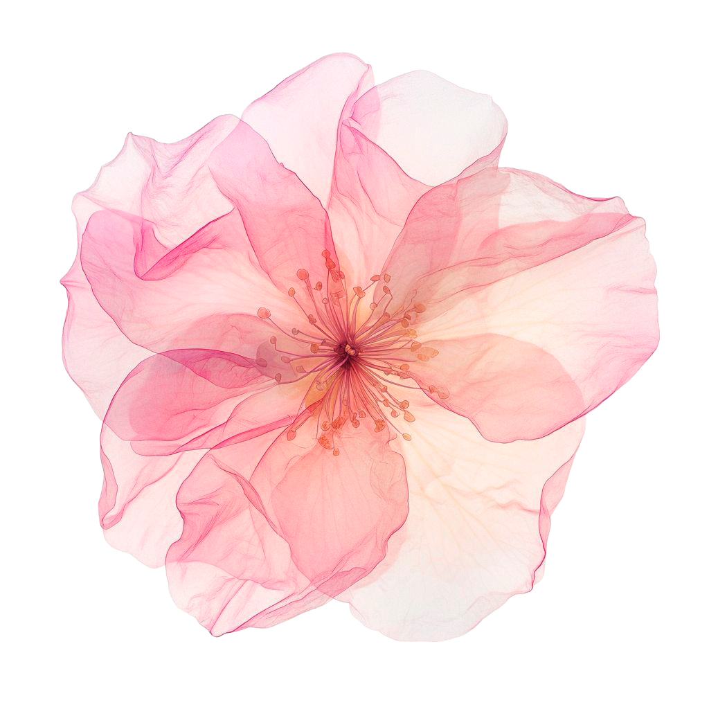

Talleres cursados
Estos son los talleres que he cursado durante mi formación en Diseño en la Pontificia Universidad Católica de Valparaíso.
 Inicio
Inicio

Estos son los talleres que he cursado durante mi formación en Diseño en la Pontificia Universidad Católica de Valparaíso.